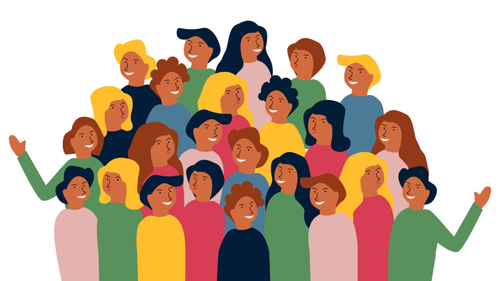

Capítulo 7
Participación social e institucional en el desarrollo sustentable
Introducción a las tendencias del desarrollo sustentable
El desarrollo sustentable busca hacer compatible la satisfacción de las necesidades y aspiraciones sociales con el mantenimiento de los equilibrios biofísicos y sociales indispensables para el desarrollo actual y futuro.
Participación social
Hablar de medio ambiente y desarrollo sustentable sin la participación del sector social se considera un pecado ambiental inaceptable. Es imposible concebir la aplicación de estrategias sustentables sin la intervención real y activa de una ciudadanía organizada.
Para lograr un aprovechamiento racional de los recursos naturales renovables y asegurar la base del desarrollo económico, es indispensable la presencia activa y consciente de los diferentes grupos de la sociedad civil.
Participación institucional
La Ley General del Equilibrio Ecológico establece que: "El gobierno federal deberá promover la participación corresponsable de la sociedad en la planeación, ejecución, evaluación y vigilancia de la política ambiental y de recursos naturales".
Además, se señala la obligación de la Secretaría de Medio Ambiente de integrar órganos de consulta en los que participen:
- Entidades y dependencias de la administración pública
- Instituciones académicas
- Organizaciones sociales
- Sector empresarial
Estos órganos cumplen funciones de asesoría, evaluación y seguimiento en materia de política ambiental, y pueden emitir opiniones y observaciones relevantes.
SEMARNAT y los Consejos Consultivos
Así nació la SEMARNAP (hoy SEMARNAT) con el concepto de Consejos Consultivos de Participación Ciudadana. Se integraron uno por cada estado y un Consejo Consultivo Nacional, en el que están representados todos los estados del país.